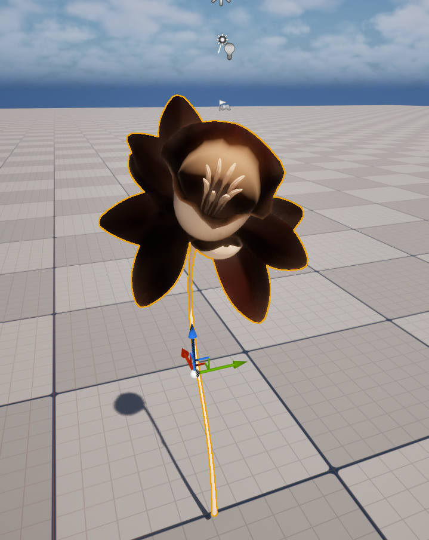
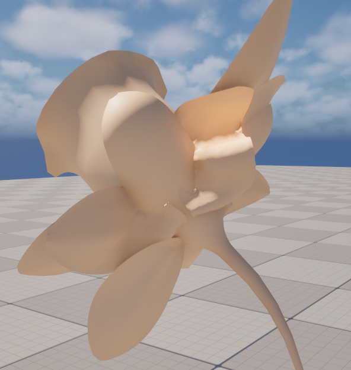

Due to VAT, particles don't look good in Unreal because they are cards on copied points. So I tried using the Houdini Niagara plug-in to see if it could produce better results. I used Itim's mud to test the pipeline.
This is the link for the tutorial: https://youtu.be/dF7yHULxgDk?si=SoejVi2j1lb-tmBp
This is the result in Unreal.
VAT TEST
I used Yiyi's Daffodil to import it to Unreal, some problems happens. First is the normal problem, the normal doesn't look correct in Unreal. And then I found I need to click the Two Sided Normal in Instance, so the normal will display correctly in Unreal.

Another problem is the animation doesn't look like the same in Houdini, I think that's probably because the petal intersect with each others, so some parts the position will not gained correctly. This is the comparision between Houdini and Unreal. And then Yiyi adjusted the sim, and then it works well in Houdini.

In order to have more control over the animation, I turned off auto-play and made it controllable in the Level Sequencer.
Interaction
I also experimented with a trigger box and staggered the flower bloom timing to create varied animation.